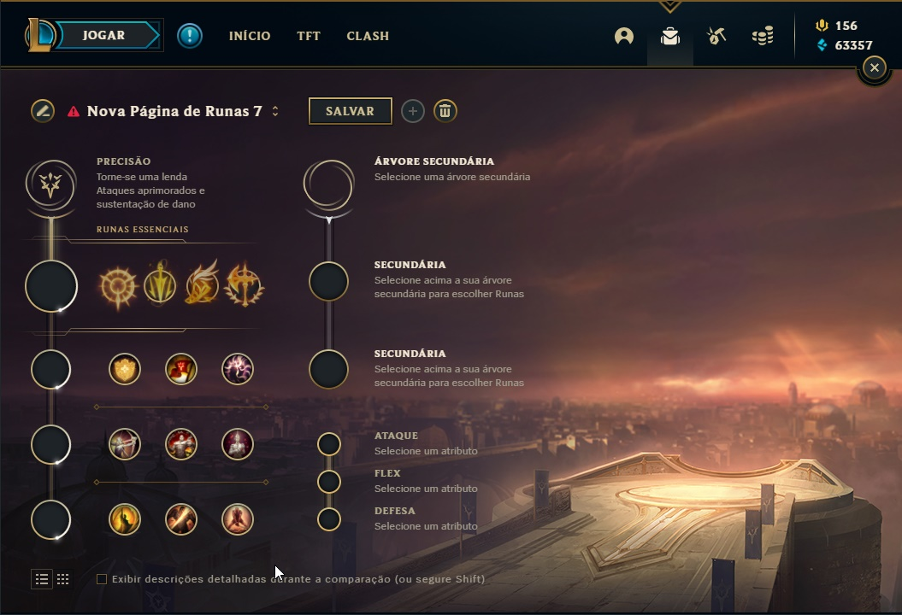
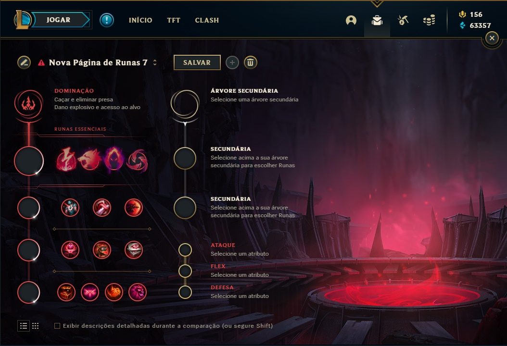
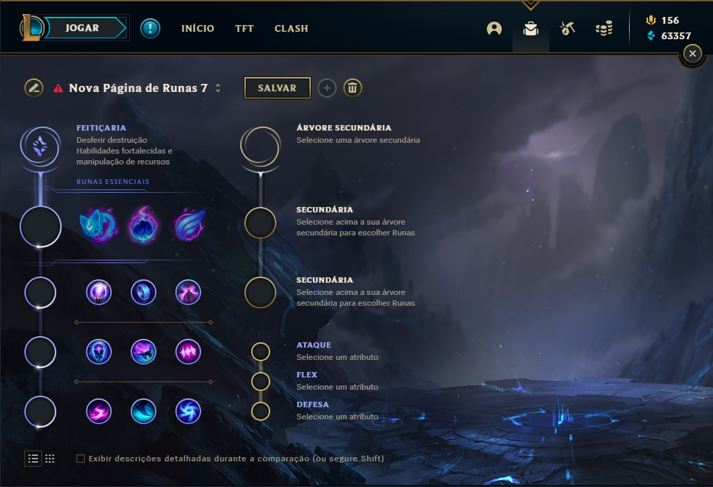
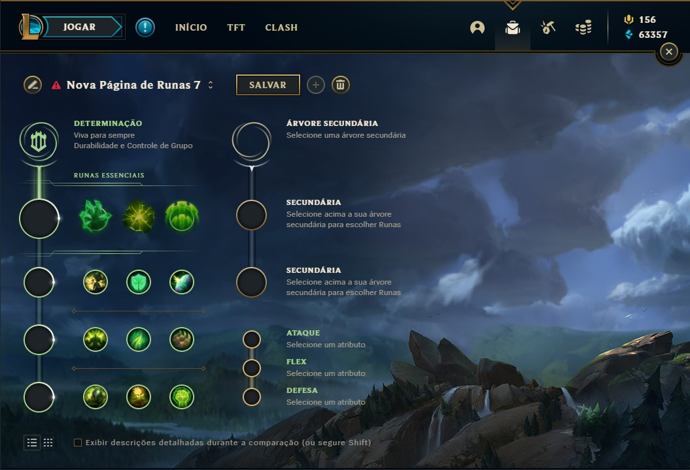
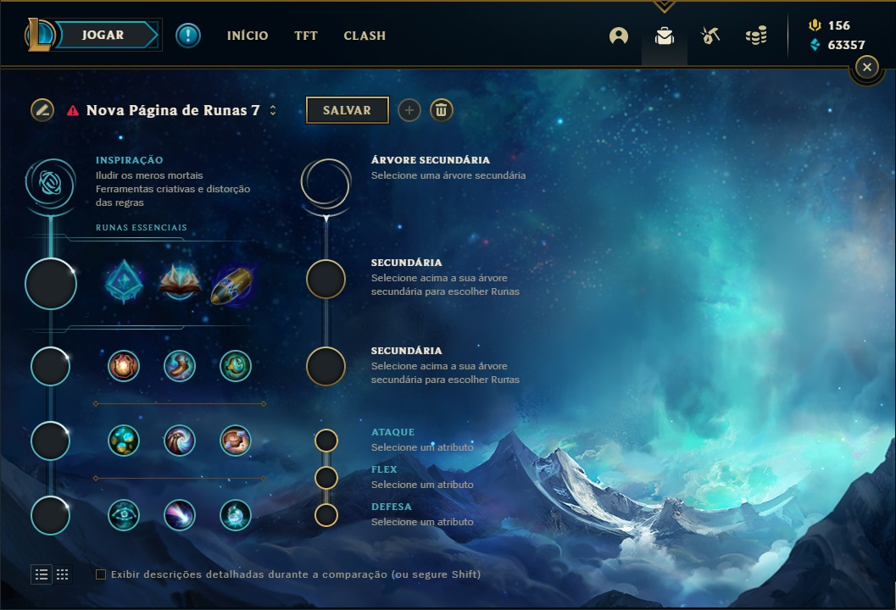

As Runas são como as magias antigas do universo de Runeterra, forjadas para dar aos campeões habilidades especiais que podem ser ajustadas conforme o estilo de jogo que você quer dominar. Escolher as runas certas pode transformar a maré de uma partida, adaptando seu campeão a diferentes situações no Rift. Vamos conhecer cada caminho rúnico e como eles podem te levar à vitória:
Precisão: Para Quem Quer Destruir com Ataques Implacáveis

A árvore de Precisão é a escolha dos jogadores que confiam em ataques básicos para causar uma avalanche de dano contínuo. Essa árvore oferece uma vantagem poderosa em trocas longas e permite que você mantenha o DPS (dano por segundo) no máximo. Ideal para ADC's e lutadores que vivem da consistência em lutas prolongadas.
Ritmo Fatal
Esse é o segredo para se transformar numa máquina de disparos. Ritmo Fatal aumenta absurdamente a sua velocidade de ataque por alguns segundos após atacar campeões. Se você quer transformar seus ataques em uma chuva implacável, Ritmo Fatal é o caminho.
Pressione o Ataque
Três ataques consecutivos em um campeão e, o alvo começa a tomar mais dano de todas as fontes! É a runa perfeita para garantir que o alvo caia rapidamente após uma sequência de ataques bem coordenada.
Agilidade nos Pés
Oferece cura e um aumento de velocidade a cada ataque, perfeito para campeões que precisam se manter em segurança enquanto disparam de longe. Quer ser o atirador que nunca é pego? Então, essa runa é a sua melhor amiga.
Conquistador
Ao causar dano, você acumula stacks que aumentam sua cura e dano adicional. Irelia, Riven e Aatrox brilham com essa runa, se tornando monstros imortais em batalhas prolongadas.
Dominação: Para Assassinos que Querem Acabar com o Inimigo em Segundos

Se sua estratégia é eliminar o inimigo antes que ele perceba o que o atingiu, a árvore de Dominação é sua melhor escolha. Aqui, a prioridade é causar burst de dano rápido e letal, perfeito para campeões que fazem emboscadas e eliminam alvos isolados em segundos.
Eletrocutar
Dispara um burst de dano extra após três ataques ou habilidades diferentes em rápida sucessão. Garante que você delete inimigos frágeis antes que eles possam responder.
Colheita Sombria
Ativada quando você causa dano a inimigos com pouca vida, garantindo stacks de dano adicional a cada abate. Quanto mais você abate, mais forte você se torna.
Predador
Ativando a runa, você ganha um aumento significativo de velocidade de movimento e um burst de dano ao chegar perto de seu alvo. Ideal para caçadores implacáveis.
Chuva de Lâminas
Ativa um aumento drástico na sua velocidade de ataque ao acertar três ataques básicos em rápida sucessão. O inimigo mal tem tempo de reagir antes de ser deletado.
Feitiçaria: Para Magos que Querem Destruir Tudo com Poder Arcano

Se o seu estilo de jogo envolve explodir inimigos com habilidades devastadoras e controlar o campo de batalha com magia, a árvore de Feitiçaria vai te transformar em uma força a ser temida. Magos e campeões de poke se beneficiam enormemente dessa árvore.
Cometa Arcano
Dispara um cometa mágico que acerta os inimigos sempre que você atinge uma habilidade. Ideal para dominar as rotas com facilidade, constantemente zonando os inimigos para longe.
Ímpeto Gradual
Oferece mobilidade após acertar suas habilidades. Ideal para magos que preferem manter uma distância segura enquanto destroem os inimigos de longe.
Invocar Aery
Oferece tanto dano adicional quanto proteção. Quando usada ofensivamente, dá um impulso extra ao seu dano; quando usada defensivamente, fornece um escudo a aliados.
Determinação: Para Tanques que Querem Sobreviver a Qualquer Carga

Quando o plano é segurar as linhas de frente e sobreviver ao maior número de golpes possível, Determinação é o caminho. Com regeneração de vida e resistências aumentadas, é perfeita para proteger o time.
Pós-choque
Ao imobilizar um inimigo, você causa dano adicional e ganha um aumento significativo nas suas resistências. Ideal para iniciadores que mergulham na briga.
Guardião
Ao proteger um aliado em perigo, invoca uma esfera de proteção que fornece escudos. É a defesa extra que pode mudar o rumo de uma luta!
Aperto dos Mortos-Vivos
Você ganha um aumento permanente nas suas estatísticas de vida ao combater, tornando-se cada vez mais difícil de derrubar conforme o jogo avança.
Inspiração: Para Quem Quer Usar a Criatividade e Jogar Fora da Caixa

Inspiração recompensa jogadores criativos prontos para experimentar novas estratégias. Oferece flexibilidade e opções únicas para se adaptar ao que o jogo exige.
Aprimoramento Glacial
Dá aos seus ataques e habilidades um efeito de lentidão decisivo nas lutas, criando oportunidades para o time brilhar.
Livro de Feitiços Deslacrado
Permite trocar seus feitiços de invocador durante o jogo, oferecendo uma versatilidade incrível para ajustar estratégias em tempo real.
Primeiro Ataque
Ao causar dano primeiro, você ganha ouro extra e potencializa seu dano. Perfeito para jogar de forma agressiva e capitalizar oportunidades.